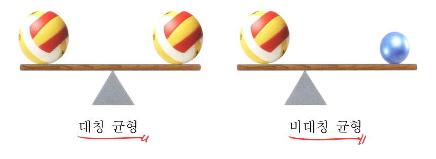
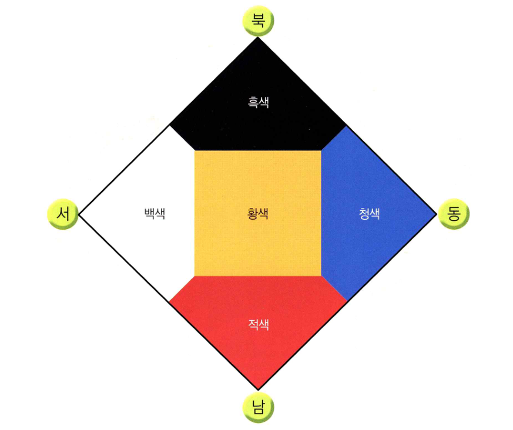

회독본
9.미술
노트 p2–p20 · 19쪽 · 글자는 전사본, 배치는 노트
미술 교육론
로웬펠드 & 가드너
1) 로웬펠드 - 표현 능력, 발달 단계
1.난화기 (2~4세)
Scribble
2.전도식기 (4~7세)
두족인, 자기중심적
3.도식기 (1,2학년)
도식적 표현 (같은 대상에 대해 반복되는 표현, 색상) 나타남
+기저선, 중앙원근법, 투영법, 전개도법 등
4.또래집단기 (3,4학년)
사실적 경향과 도식적 표현 혼재
→교사가 오감을 사용한 관찰로 사실적 표현 촉진
+중첩, 원근 영향
5.의사실기 (5,6학년)
시각형 (사실형) - 객관적, 사실적
촉각형 (감각형) - 주관적, 감정적
6.결정기
+중간형 (복합)
2) 가드너 - 감상 능력 발달 단계
1.사실기 (3~4학년)
→사실지향적 ; 주제에 대한 관심
∴교사가 다양한 자료로 사실중심적 편향을 깨야
2.탈사실기 (5~6학년)
→다양한 미적 특성 ; 재료나 기법에 관심
조형 요소와 원리
조형 요소와 원리
1. 조형 요소
1)점
⇒면적이 좀 있어도 점임 (↔ 기하학)
2)선
직선 : 속도감, 긴장감
곡선 : 유연성, 부드러움
3)면
4)형과 형태
형 : 2d 이미지의 모양
형태 : 3d 이미지의 모양
5)색
6)질감
촉각적 : 만져지는거 ⇒ 표면에서 느껴지는 느낌
시각적 : 보이는거
7)양감 : 부피감, 무게감. 평면도 가능
2. 조형 원리
1)비례 : 크기 관계
2)율동 : 반복에서 오는 리듬감
3)동세 : 운동감
4)강조 : 선, 형, 색 강하게
5)반복
6)통일 : 형·색의 동일성 ⇒ 단조로우면 X ; 통일 속의 변화
7)변화 : 형·색·크기 변화 ⇒ 무질서 X ; 통일 속의 변화
8)균형
대칭 : 좌우 대칭
비대칭 : 좌우 다르지만 균형함
⇒ex) 모빌
9)대비 : 상반되는 특징
10)대칭 : 선대칭
11)점증 ; gradation ⇒ 점차 변화
12)조화 : 어울림

디자인과 매체
사진과 애니메이션
1. 사진
가로/세로
가로틀 : 너비, 안정
세로틀 : 높이, 역동
거리
줌 아웃 (=풀 샷) : 멀리 보이게
줌 인 (=클로즈업 샷) : 가까워 보이게
각도
아이 앵글 : 수평, 편안, 안정
하이 앵글 : 위→아래, 작아 보임, 전체
로우 앵글 : 아래→위, 커 보임, 웅장
빛
순광 : 피사체가 광원 보고, 색↑
측광 : 광원이 옆, 형태·깊이감↑
역광 : 광원을 등지고, 후광 효과
셔터
긺 : 역동적
짧음 : 순간을 정확하게
구도
삼등분할 : 삼등분선 교차점, 선 위에 배치
2. 애니메이션
원리 : 잔상 효과에 의한 착시 현상
과정 : 스토리보드 사용
입체와 공예
조소
1. 조소
조각 : 외부→안으로 파내기
+
소조 : 안→외부로 붙이기
환조 : 완전 입체
부조 : 반입체
조형 요소·원리 : 질감, 양감, 비례·균형, 동세
테라코타 : 초벌만 해서 만드는 흙인형
2. 찰흙
반죽 ⇒ 내부 기포
성질 : 가소성, 접착성, 유연성, 내화성, 변질성
표현 방법
분석적 : 전체→부분
종합적 : 부분→전체
붙이기 : 긋기, 흠집
뼈대 : 철사, 노끈
토우 → 잡상
전통 공예
1. 한지 공예
전지 공예 : 자르기
지장 공예 : 상자에 붙이기
지승 공예 : 종이로 끈만들기
지호 공예 : 종이를 점토처럼
줌치 공예 : 물로만 한지 붙여서, 가죽처럼
2. 직조 공예
지승 공예 : 한지 (재료)
왕골 공예
짚공예
3. 염색 공예
⇒홀치기 염색 (묶거나 홀쳐서 일정부분 염색X)
매염제 (염색 보조) : 소금
4. 도자기 공예
종류
토기 : 유약 X
도기 : 유약 O, 초벌O, 재벌X
자기 : 유약, 초벌, 재벌 O
제작 과정
반죽
→
성형
→
건조
→
무늬 (새기기)
→
초벌
→
무늬 (그리기)
→
유약
→
재벌
방법 : 핀칭(빚기), 흙가래 만들기, 판, 틀, 속파기
변천
토기
↓
청자 : 푸른빛, (상감 기법)
↓
분청사기 : 안쪽 회색, 바깥쪽 흰색 흙
↓
백자 : 처음부터 흰색 고령토
⟶
상감 : 무늬 파내고 다른 색 흙
청화 : 청색 안료
철화 : 철 성분(검붉은 색) 안료
조형 요소와 원리
색
1. 색의 속성
색상 : 색의 독특한 성질
명도 : 밝고 어두운 정도
채도 : 맑고 탁한 정도
⇒ 모두 가지면 유채색, 명도만 가지면 무채색
2. 10색상환
⇒빨,노,파에서 시작, 서로 섞어서 기본색 5개(빨,노,초,파,보) 만들고 이웃한 색끼리 섞어서 10색
반대색(보색) : 빨강 ↔ 청록
3. 오방색

황색(황제)
흑색(현무,겨울)
적색(주작,여름)
백색(백호,가을)
청색(청룡,봄)
음양오행의 원리 (적·청이 양, 흑·백이 음)
4. 색의 성질
주목성 : 한 색이 눈에 잘 띄는 정도 ⇒ 따뜻한 색, 명도·채도가 높을수록 높아짐
명시성 : 두 색이 대비되어 눈에 잘 보이는(=선명한) 정도 ⇒ 색상,명도,채도 차이 비례
5. 색의 대비
1)색상 대비 ⇒ 보색 잔상(배경색의 보색이 잔상으로 남는 현상)에 의해 생김
2)명도 대비 ⇒ 배경색의 명도가 낮을수록 명도가 높아 보임
3)채도 대비 ⇒ 배경색의 채도가 낮을수록 채도가 높아 보임(무채색 → 채도 매우 낮음)
4)보색 대비
+5)면적 대비
6. 색의 혼합
1)가산 혼합 ⇒ 섞을수록 명도↑, 빛의 혼합 ; RGB(W) 기반
2)감산 혼합 ⇒ 섞을수록 명도↓, 물감의 혼합 ; CMY(K) 기반
3)중간 혼합 ⇒ 병치 혼합(점묘법), 회전 혼합(색팽이)
7. 대표작
인상파(모네) ⇒ 빛의 변화에 따른 색의 변화 표현. 혼색X, 원색을 나란히 칠해서 표현
신인상파(쇠라) ⇒ 인상주의의 발전·심화, 밝고 생생한 화면을 병치 혼합으로 표현, 혼색X
야수파(마티스) ⇒ 물체의 고유색 부정, 색채로 감정 표현
평면 표현
풍경화, 인물화, 정물화
1. 풍경화
1)특징 ⇒ 원근감, 계절감
2)원근법
서양
투시 원근법 (선 원근법)
(가까우면 크게, 멀면 작게)
1점 투시 : 소실점 1개 (대각 구도, 집중감)
물체의 외곽선을 연장한 직선들이 만나는 점
2점 투시 : 소실점 2개 (웅장함)
→ 앙시, 중심, 조감
공기 원근법 (색채 원근법) : 가까우면 진하고 선명, 멀면 연하고 탁하게
중첩 : 겹쳐서 원근 표현, 거리에 따른 크기 변화 X
동양
삼원법 (이동 투시법)
고원법 - 아래에서 올려다보는, 세로선, 높이 (∴ 앙시)
평원법 - 같은 높이에서 바라보는, 가로선, 넓이 (∴ 중심)
심원법 - 위에서 내려다보는, 깊이 (∴ 조감)
3)구도
⇒대각(집중), 수직(엄숙,높이), 수평(안정,너비), 호선(움직임)
4)단계
구도
→
스케치
→
채색
→
색채 원근
2. 인물화
1)표현 요소
⇒비례, 균형, 동세
2)종류
자화상, 초상화, 캐리커처
익살, 유머, 풍자 (= 만화)
3)동서양
동양 : 형상을 통해 정신까지 표현 ↔ 서양 : 과학적, 사실적 표현
4)대표작
모나리자(다빈치) ⇒ 스푸마토 기법 ; 경계를 흐릿하게
도라 마르의 초상(피카소) ⇒ 입체파 → 다시점
3. 정물화
1)시점
⇒정물이 잘 드러나는 시점 선택
2)구도
변화 → 단조로운 구도, 정중앙, 2등분 X
통일 → 나열, 복잡, 산만 X
균형 → 치우친 구도 X
⇒삼각형(안정,통일), 원형(통일), 마름모(변화,균형,통일), 역삼각형(긴장,불안)
3)명암
⇒양감 표현
cf)질감 ⇒ 재료 선택 (펜 → 날카롭고 딱딱, 나머지 → 부드러움)
4)대표작
과일 정물(세잔) ⇒ 다양한 시점, 현대미술의 시작
관찰 표현 (풍경화, 인물화, 정물화)
→시각적 사고 함양
방법 : 부분 확대, 절단, 규칙, 여러 방향, 질감
수채화
1. 성질, 재료, 용구
성질 - 사용법 간단, 건조 빠름 ⇒ 학교 수업에 적합
재료, 용구
유의점 : 물감을 미리 말려서 굳힘, 비슷한 색이 이웃하게, 붓 끝이 위로 가게, 혼색 시 채도↓
2. 투명/불투명 수채화
투명 : 물의 양으로 명도 조절, 경쾌 표현, 맑음. 밝은색 → 어두운색
불투명 : 흰·검으로 명도 조절, 질감 효과, 무거움, 순서 무관 . 과슈
3. 물감
아크릴 물감
⇒접착성↑, 건조 속도↑, 물의 양에 따라 수채화/유화, 선명함. 도자기·유리 팔레트
포스터 물감
⇒불투명 수채화
디자인과 매체
디자인
⇒쓰임새에 맞게 아름답게 형태 계획. 심미성, 경제성, 실용성, 독창성
1. 시각 전달 디자인
그림 문자
마크
픽토그램 (모든 사람이 이해 ⇒ 상징,시각,단순화)
인포그래픽 (색, 이미지, 글자)
광고
포스터
캐릭터
이모티콘 (emotion + icon) ⇒ 감정, 생각 표현
편집
간판 ⇒ 단순명료, 환경과 어울리게
심볼
타이포그래피 (글자)
포장
2. 제품 디자인
⇒기능성 + 심미성
+환경 고려한 에코 디자인
3. 환경 디자인
공공 디자인
건축 디자인 (아치, 트러스)
4. 다양한 디자인
유니버설 디자인 ⇒ 모두를 위한 디자인 (사용자 범위↑)
굿 디자인
디지털 드로잉
⇒디지털 도구 활용해 그림 그리기
장점
수정, 다양한 표현, 레이어(→ 투명하게 여러장 쌓아 그리기), 효과, 저장·공유, 반복, 환경친화
트레이싱
⇒덧대어 그리기
전통 미술
서예
1. 자세
1)완법 (팔의 자세)
현완법 - 큰 글자, 팔꿈치 들고
제완법 - 중간 크기의 글자, 팔꿈치 살짝 대고
침완법 - 작은 크기의 글자, 손목을 다른 손으로 받침
2)집필법
쌍구법 - 큰,중간 글자 , 엄지,검지,중지
단구법 - 작은 글자, 엄지, 검지
2. 용어
1)전체
운필법
용필법 (동의어)
→ 점과 획을 쓰는 방식
2)점획
기필 : 처음, 장봉(=판본체, by 역입과 회봉) / 노봉(=궁체)
행필 : 중간
수필 : 끝
전절 : 획이 꺾이는 부분, 전(휘도록, 모나지 않게) + 절(꺾어서, 모나게)
접필 : 점획을 붙여 쓰는 것
3)서명
낙관 : 이름, 도장
전각 : 도장 파기 (양각-배경 파내기 / 음각-이름 파내기)
4)기타
중봉 : 붓끝이 획 중앙으로, 세워서. 권장
편봉 : 붓끝이 획 가장자리로, 눕혀서. 서예 X
배자 : 글자 배치
집자 : 예시 글자
서예 지도 단계 : 용필(점획) → 자형(글자) → 장법(배자)
3. 판본체와 궁체
| 판본체 | 궁체 | |
|---|---|---|
| 점획의 굵기 | 일정함 | 다양함 |
| 자형 | 사각형 | 다양함 |
| 접필 | 깊음/자·모, 모음 병서 접필 X | 다양함/자·모 접필 가능 |
| 전절 | 'ㅇ' 제외하고 절, 붓끝 떼고 붓면 조작 | 다양함, 붓면 돌림 |
| 기필·수필 | 장봉으로 기필(역입), 수필 시 회봉 | 노봉으로 기필 |
| 중심 | 가운데 | 살짝 오른쪽 (구궁 오른쪽 세로선) |
평면 표현
표현기법
1. 우연의 효과
물감 떨어뜨리기(Dropping) — 붓에 물감 듬뿍 묻혀 떨어뜨리기
번지기(Blotting) — 젖은 종이에 물감 떨어뜨려 번지게
문지르기(Rubbing) — 합판·나이프에 물감 묻혀 문지르기
찍기(Stamping) — 말거나 구긴 종이 단면에 물감 묻혀 찍기
마블링 — 물 위 유성 물감 휘저어 종이로 떠내기
흘리기 — 물감 떨어뜨린 종이를 세워 흘러내리게
불기 — 떨어뜨린 물감을 빨대로 불어 퍼뜨리기
데칼코마니 — 두껍게 칠해 반 접어 찍기, 대칭 무늬
실 빼기 — 물감 물들인 실을 놓고 잡아당기기
뿌리기 — 막대·붓에 물감 묻혀 뿌리기
거품으로 그리기 — 물감+비누 거품 불어 올려 종이에 대기
롤러로 그리기 — 롤러 굴리기, 잉크가 끈적해야 우연 무늬
칫솔로 뿌리기 — 칫솔 물감을 체에 문질러 고운 망점
소금 뿌리기 — 채색 후 마르기 전 소금 뿌려 눈꽃 얼룩
2. 의도적 표현
프로타주(Frottage) — 요철에 종이 얹고 문질러 결 옮기기 (에른스트)
모자이크 — 색지·돌·색유리 조각 붙이기 (비잔틴 벽화)
콜라주 — 종이·헝겊·나뭇잎 붙이기 (현대미술)
스크래치 — 밝은 밑칠 + 어두운 겹칠 후 긁어내기
핑거페인팅 — 색풀 칠하고 마르기 전 손가락으로 문지르기
스텐실 — 뚫은 구멍으로 잉크 밀어 넣어 찍기 (= 공판화)
포토몽타주 — 여러 사진의 부분을 오려 재결합
배틱 — 크레파스·초로 그린 뒤 채색, 그 부분은 안 묻음
마스킹테이프 — 붙이고 배경 칠한 뒤 떼어내 남기기
3. 수채 표현 방법
웨트 인 웨트 — 젖은 종이에 칠해 자연스럽게 번지게
웨트 온 드라이 — 마른 종이·마른 색 위에 겹쳐 칠하기
갈필 — 물기 거의 없는 붓에 물감 묻혀 칠하기
닦아내기·긁어내기 — 칠한 색을 화장지·스펀지로 문질러 닦아내기
판화
1. 개론
1) 특징
간접성 : 판을 매개로 표현
고유성 : 제작 방식·기법에 따라 다르게 표현
복제성 : 여러 번 찍기 가능
실용성 : 실생활과 관련
대중성 : 가격 저렴
2) 재료와 용구
잉크 : 판화용 잉크
잉크판 : 잉크 묻혀서 사용
롤러 : 잉크판에 굴려서 묻힘
나이프 : 잉크 덜어·정리
바렌 : 판화 찍는 도구
바니시 : 잉크 정도 조절
석유 : 닦아내기
⟶
테레빈유 한꺼번에
프레스기 : 찍기
3) 조각칼
앞으로 밀어 새김 : 둥근, 납작, 세모
수직 + 뉘어 새김 : 창칼
4) 종류
⇒볼록 판화, 오목 판화, 평판화, 공판화
2. 볼록 판화
1) 특징
칼자국 느낌 (볼록만 칼 사용)
도장·전각에 사용, 좌우 바뀜
2) 표현 방법
양각 : 배경을 파냄 (배경 = 흰색)
음각 : 선을 파냄 (선 = 흰색)
양음각 : 양각 + 음각
3) 종류
종이 판화
고무 판화
+α
우드록 판화 (⇒ 발수성이므로 수채 물감 사용시 풀·세제 섞어)
골판지 판화
3. 오목 판화
1) 특징
선이 날카롭고 세밀
지폐·증권, 좌우 바뀜
2) 종류
드라이포인트 : 판에 직접 니들 사용
에칭 : 판 부식
4. 평판화
1) 특징
요철 X, 직접 그려 표현
좌우 바뀜, 회화적 느낌
2) 종류
석판화 : 판에 직접 그림 (해먹·리소 크레용)
모노타이프 : 한 장만 (mono), 판 위에 물감·잉크로 그리고 찍기
5. 공판화
1) 특징
좌우 반전 X
상업 목적 (의류 등)
2) 종류
스텐실⇒오려내고 구멍으로 찍기, 반복 표현↑, 선 선명함
실크스크린⇒천 구멍을 풀·니스로 막고 나머지로 잉크 ⇒ 재료 무관, 상업 이용
6. 제작 과정
1) 종이 판화
단독 판 : 판 모양을 오려서 ⇒ 하나의 대상 선명하게 표현
대지 판 : 두꺼운 종이에 붙여서 → 여러 대상 표현
유의점
너무 얇거나 두꺼운 종이 X
넓은 면을 밑에
2) 고무판화
투사지 (기름종이) ⇒좌우반전 X
다색 표현
여러 판 만들기
적은 폭 채색
잘라서 다른 색으로
⟶
판 1개
3) 모노타이프
주방 세제 등 섞어 바로 마르지 않도록
분무기로 물 뿌려 더 선명
4) 스텐실
밑그림 복잡 X
전통 미술
전통 회화
1. 특징과 종류
특징 : 정신적 측면 강조, 여백
종류
수묵화 : 먹의 농담, 번지는 효과 중시 (담→중→농묵)
수묵 담채화 : 수묵화 + 옅은 채색
⟶
얇은 한지
채색화 : 색이 주가 됨 ⇒ 진하게, 여러 번 덧칠 (→ 두꺼운 한지)
한지의 특성: 얇고 먹물이 잘 스며듦
2. 민화
주로 채색화, 주술적 의미(소망·염원), 소박·익살
ex)호작도, 책거리·책가도
3. 용구, 용필법
용구
종이 : 한지 - 매끈한 면
붓 : 수묵화 → 선, 붓털 긺 / 채색화 → 색칠, 붓털 짧음
물감 : 한국화 전용
문진·연적 : 누르개, 물담는곳
용법
직필법 : 수직, 중봉
측필법 : 기울여서, 편봉
4. 표현법
전통 회화
①구륵법→윤곽선, 색칠
②몰골법→윤곽선 X
③백묘법→먹선 농담·굵기
④삼묵법→한 붓에 삼묵, 채색 가능 (전체 담묵, 중간 중묵, 붓끝 농묵)
⑤발묵법→먹 튀기기
⑥적묵법→쌓아 그리기
⑦파묵법→농묵으로 담묵 깨기
⑧운염법→엷게 펴서, 구름·안개
⑨갈필법→물기↓, 거칠고 메마른 느낌
풍경 표현
①미점준→쌀알같이, 수목 표현
②수직준→내리긋기, 높이
③부벽준→도끼자국, 산·바위
④절대준→ㄱ,ㄴ,ㄷ / 바위산
⑤피마준→같은 방향·구불구불, 흙산
⑥하엽준→연잎 줄기
평면 표현
소묘
1. 종류
크로키 : 빠르게 그리는 그림
정밀 묘사 : 자세히 묘사 (양감↓)
데생 : 양감↑, 비교적 자세히
2. 재료
연필 : H(Hard), B(Black)
콩테 : 중간 단단
목탄 : 무름, 잘 번짐
단단
↓
무름
⟶
정착액 권장
정착액 필수(+파스텔)
감상
미술관
단독 감상
비교 감상
1. 대화 중심 감상 교육
⇒시각적 사고력 ↑
아레나스 : 수용-교류-통합
시각적 사고 전략(VTS) : 무슨일? 왜? 다른거? ⇒ 세 질문만 사용
사조
1. 근대미술
1) 자연주의
⇒자연의 아름다움 표현
밀레 - 이삭줍기
2) 사실주의
⇒일상적 주제를 객관·사실적 표현
쿠르베 - 돌 깨는 사람들
3) 인상주의
⇒빛의 변화에 따른 색 변화 표현
모네 - 수련, 루앙 성당 연작
4) 신인상주의
⇒인상파 과학·체계화, 병치혼합, 점묘법
쇠라
5) 후기인상주의
⇒시각적 재현보다 개성, 주관, 감정
고흐 - 해바라기 (→ 임파스토 기법(유화 두껍게))
2. 현대미술
1) 야수파
⇒고유색 부정, 색으로 감정 표현
마티스
2) 표현주의
⇒사실적 표현 X, 감정에 따라 과장·변형
뭉크 - 절규
3) 입체파
⇒다시점을 한 화면에
피카소
4) 미래주의
⇒사물 역동성, 속도감
5) 초현실주의
⇒이상하고 비이성적
마그리트⇒데페이즈망 (낯설게 보기)
6) 추상 미술
⇒현실을 묘사 대상으로 하지 X
따뜻한 추상 - 칸딘스키, 폴록(액션 페인팅)
차가운 추상 - 몬드리안
7) 팝 아트
⇒대중문화적 이미지들 소재로 사용 → 소비사회 비판
앤디 워홀, 리히텐슈타인, 올덴버그 등
8) 옵아트
⇒시각적 착각
10 대지 미술
규모가 크고 일시적, 자연물·자연 공간에 인공적 표현
11 자연 미술
최소 개입으로 자연과 예술을 통합, 인간과 자연의 공존
12 설치 미술
공간의 특성까지 작품 요소로 삼는 장소 특정적 미술
13 공공 미술
대중을 위해 공공장소에서 이루어지는 미술
14 정크 아트
폐품·쓰레기를 소재로 한 미술
15 키치 아트
유치·저속함을 의도적으로 써서 기성 예술에 저항
16 오브제
일상 사물을 예술에 활용해 새 의미·미적 가치 부여
17 레디메이드
기성품을 조형적 손질 없이 그대로 제시 (뒤샹 〈샘〉)
18 아상블라주
기성품·잡다한 물건을 모아 조립하는 기법
19 모빌
균형으로 움직이는 조각 (콜더) ↔ 스태빌: 고정된 거대 조각
20 키네틱 아트
동력에 의해 실제로 움직이는 작품
21 콜라주
각종 재료를 평면에 붙여 표현 (시초: 파피에 콜레)
22 포토몽타주
인쇄 매체에서 오려 낸 사진·문자를 조합
23 포토 콜라주
여러 각도로 촬영한 사진들을 조합해 붙임
24 행위 미술
몸과 몸짓을 표현 재료로 삼는 미술
25 낙서 미술 (그라피티)
스프레이로 그린 낙서 같은 문자나 그림
26 극사실주의
사진보다 더 정밀하고 선명하게 현실을 묘사
27 자동기술법
의식적 계획 없이 손 가는 대로 무의식을 표현
28 테셀레이션
쪽매맞춤, 겹침·틈 없이 같은 모양으로 평면을 덮음
29 파빌리온
실험적 디자인을 시도하는 임시적·가변적 소규모 구조물
30 AI 아트
생성형 인공지능으로 이미지·미디어를 생성하는 미술
31 GPS 드로잉
GPS로 계획된 경로를 이동해 지도 위에 그림을 그림
미술 교육론
미술교육의 일반이론
1. 로웬펠드 vs. 아이스너
로웬펠드→자유로운 자기표현을 통한 창의성
아이스너→미술이해·감상교육
2. 학년군별 학생 특성
⇒가드너, 로웬펠드 이론 참고
3. 미술교육 사조
1)표현 기능 중심
⇒반복훈련, 미술 기능 향상, 결과 중심
2)창의성 중심 (로웬펠드)
⇒자유로운 자기표현, 과정 중심
3)학문 중심 (아이스너)
⇒체험·감상 영역 확대
4)시각 문화
⇒대중문화를 미술 교육 대상으로
속 시각 이미지를 바르게 이해·활용 → 비주얼 리터러시
5)다문화
6)생태학
7)융합
8)지역사회
9)구성주의
10)포스트 디지털
미술 수업모형
1. 직접 교수법
⇒교사가 설명·시범, 위험하거나(판화), 새로운 용구(서예, 전통 회화)
문제 인식
→
설명·시범
→
질의응답
→
연습 활동
→
작품 제작
→
정리·발전
2. 반응 중심 학습법
⇒학생 반응 극대화·반영, 감상·미적 체험 영역
반응 형성
⇒ 경험, 배경지식 자극
↓
반응 명료화
⇒ 대화·토론 등 상호작용
↓
반응 심화
⇒ 관련 작품 탐색, 새로운 시각, 간단한 표현 활동
↓
정리, 발전
3. 창의적 문제 해결법
⇒모든 영역
문제 인식
↓
아이디어 탐색
⇒ 브레인스토밍
↓
아이디어 정교화
⇒ 아이디어 분석·정교화, 시각화(스케치), 선택
↓
아이디어 적용
⇒ 표현 활동
↓
종합·재검토
4. 귀납적 사고법
⇒규칙성 추론
문제 인식
→
관계 탐색
→
개념 발견규칙성, 용어
→
개념 적용
→
정리·발전
5. 기타
⇒프로젝트 학습, 토의·토론 학습, 협동 학습 방법